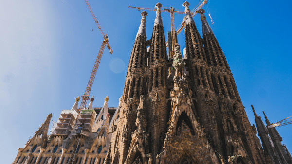
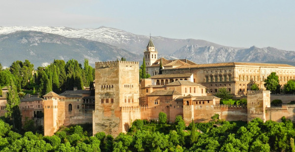
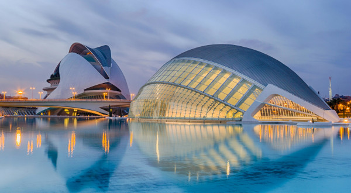
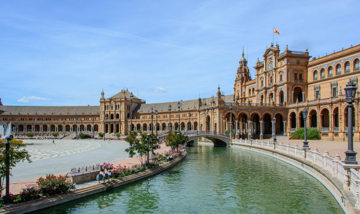
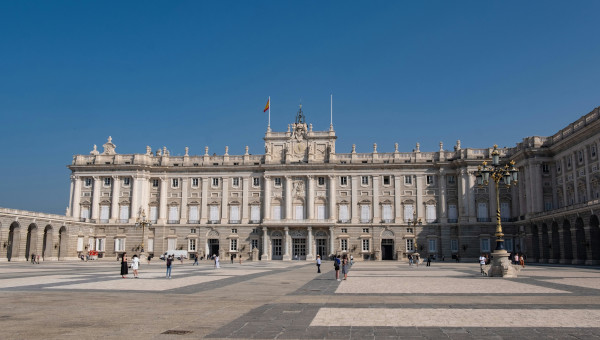

Espanha: Um País de Cultura, História e Paisagens Inesquecíveis
A Espanha, um país localizado na península Ibérica, é uma terra de contrastes e maravilhas que cativam viajantes de todo o mundo. Com uma extensão que abrange desde as montanhas dos Pirineus até as praias ensolaradas do Mediterrâneo, a Espanha oferece uma variedade de paisagens, culturas e histórias que desafiam a imaginação e encantam a todos que o exploram. Desde as grandes metrópoles até as comunidades rurais que preservam tradições milenares, a Espanha é um destino que oferece uma experiência de viagem única e inesquecível.
Viajar pela Espanha é uma jornada através de contrastes fascinantes. Você pode passear pelas ruas animadas de Madri, explorar os parques nacionais de Picos de Europa e Sierra Nevada, ou desfrutar de um mergulho nas águas cristalinas de Barcelona. A diversidade cultural e natural da Espanha oferece uma experiência enriquecedora, onde cada dia pode trazer novas descobertas e aventuras.
Neste guia de viagens, vamos explorar as dicas essenciais para tornar sua aventura na Espanha inesquecível, desde a preparação pré-viagem até as experiências que você não pode deixar de vivenciar.
Clima
O verão pode ser uma boa época para quem vai visitar as regiões de montanha dos Pirineus, além de destinos de praia como as populares Ilhas Canárias e Ilhas Baleares, entre elas Ibiza, Maiorca e Formentera.
Se você não faz questão de altas temperaturas, a dica para visitar a Espanha no Inverno. Essa estação corresponde aos meses de dezembro a março, onde as temperaturas ficam entre 0º C e 17º C.
A primavera e outono são as estações ideais para visitar a Espanha, se você quiser economizar e viajar com mais conforto. No sul do país o inverno é suave, enquanto no auge do verão faz muito calor, com temperaturas acima de 40°.
Moeda
A moeda utilizada em toda a Espanha, bem como em todos os países que fazem parte da União Europeia, é o Euro. As cédulas têm os valores: 5, 10, 20, 50, 100, 200 e 500. Já os valores das moedas são: 1, 2, 5, 10, 20 e 50 cêntimos, 1 e 2 euros.
Sua cotação está na casa dos R$6 nos últimos anos, mas pode haver grandes oscilações devido a instabilidade econômica que vivemos.
Documentação
Para entrar na Espanha são válidas as mesmas regras para os demais países da União Europeia: brasileiros não precisam de visto para uma estádia de até 90 dias, mas é obrigatório o seguro viagem para entrar na Europa. Não é necessária nenhuma vacina para entrar na Espanha e o passaporte deve ter validade de pelo menos seis meses.
A União Europeia dispensa o Brasil da necessidade de possuir um visto para os países que fazem parte do Tratado de Schengen, que é o caso da Espanha. Sendo assim, é necessário apenas ficar de olho na data de validade do seu passaporte, que deve vencer pelo menos três meses após a sua data de entrada no país.
Pode ser exigido do cidadão brasileiro a comprovação de que possui recursos financeiros para bancar sua viagem para Espanha. O valor é de 68 euros por dia de permanência e o valor mínimo total (independentemente do número de dias no país) é de 570 euros. A comprovação deve ser feita por meio de cheques de viagem, extratos, cartão de créditos ou mesmo em espécie
Idioma
O dioma oficial é o espanhol. Porém, cada comunidade também pode ter seu dialeto próprio, além do espanhol. Dependendo da cidade que você visitar, encontrará placas de rua, metrô, restaurantes e diálogos na rua no idioma local. E ter esse segundo idioma é algo natural para essas pessoas, é uma segunda língua materna
5 Principais pontos turisticos
1. Templo Expiatório da Sagrada Família

Fonte: Pexels
A igreja da Sagrada Família é considerada um dos principais pontos turísticos não só de Barcelona, mas de toda Espanha. O templo foi planejado entre 1882 e 1883 para unir a cultura católica ao Modernismo.
2. La Alhambra

Este complexo de palácios e fortaleza localizado na charmosa cidade de Granada, na comunidade autônoma de Andaluzia, é um exemplo requintado da arquitetura mourisca que sobreviveu ao último conflito com os reis católicos pelo território. Definitivamente, merece estar na sua lista de pontos turísticos da Espanha.
Construída entre os séculos XIII e XIV pela última dinastia muçulmana a ocupar a região, os násridas, a Alhambra em Granada é um testemunho da arquitetura e da arte muçulmanas, com seus palácios detalhadamente decorados e jardins exuberantes.
Para se ter uma ideia de sua beleza e imponência, mesmo depois da retomada da cidade pelos reis católicos, o complexo permaneceu vivo de acordo com suas origens e foi restaurado seguindo a estética islâmica — embora com uma ou outra construção renascentista erguida posteriormente.
3. Cidade das Artes e das Ciências

Fonte: Pixabay
Com estilo neofuturista, a Cidade das Artes e das Ciências é um complexo arquitetônico dedicado à divulgação científica e cultural e desenhado pelo arquiteto valenciano Santiago Calatrava.
Está dividida em seis áreas: o Hemisfèric, que abriga um cinema IMAX e 3D; o Umbracle, um mirante de 14 mil metros quadrados; o Museu de les Ciències, que constitui um centro de ciência interativa e planetário; o Oceanogràfic, o maior aquário da Europa; o Palau Les Arts, dedicado à ópera; e a Ágora, que abriga o CaixaForum, centro cultural do “La Caixa”, fundação bancária espanhola.
4. Plaza de España

Fonte: Pexels
A Espanha tem uma "plaza de España" em diversas cidades: Barcelona, Madrid, Zaragoza e por aí vai. Mas se tem uma plaza de España que mais se destaca, é a de Sevilha. Considerada um dos pontos turísticos mais famosos de Sevilha e da Espanha, esta praça tem aproximadamente 50 mil metros quadrados.
Construída para a Exposição Ibero-Americana de 1929 pelo arquiteto sevilhano Aníbal González, a Plaza de España em Sevilha tem a forma de um semicírculo para representar uma espécie de abraço e conexão entre o país e as antigas colônias americanas.
Mas há simbologias mais interessantes. Uma delas são as quatro pequenas pontes que cruzam o canal da praça: elas representam os quatro antigos reinos da Espanha — Castilla, León, Aragón e Navarra. Ainda, há mais de 40 bustos diferentes em homenagem a diferentes personagens da história da Espanha, como o pintor barroco Diego Velázquez e o poeta do Século de Ouro, Francisco de Quevedo.
5. Palácio Real de Madrid

O Palácio Real de Madri foi construído no século XVIII, por ordem de Felipe V, sobre um antigo solar do antigo Alcácer, antes castelo muçulmano. Sachetti começou a obra em 1738, e foi concluída em 1764. Sabatini realizou a ala sudeste e a grande escada ou escada de honra. A planta é quadrada com um grande pátio central. A porta do Príncipe, no lado leste da edificação, dá acesso ao pátio central.
Os jardins de Sabatini e Campo del Moro são outros dos atrativos do palácio, bem como todas as suas fachadas. Existe um debate na hora de enquadrá-lo em um estilo, dependendo dos autores, uns se inclinam mais pelo barroco e outros pelo neoclássico. As dependências interiores são muito numerosas e destacam o Salão de Alabardeiros, o das Colunas, o Salão dos Espelhos e o Quarto do Rei Carlos III, entre outros muitos. É possível contemplar pinturas de Velázquez, Goya, Rubens, El Greco e Caravaggio.